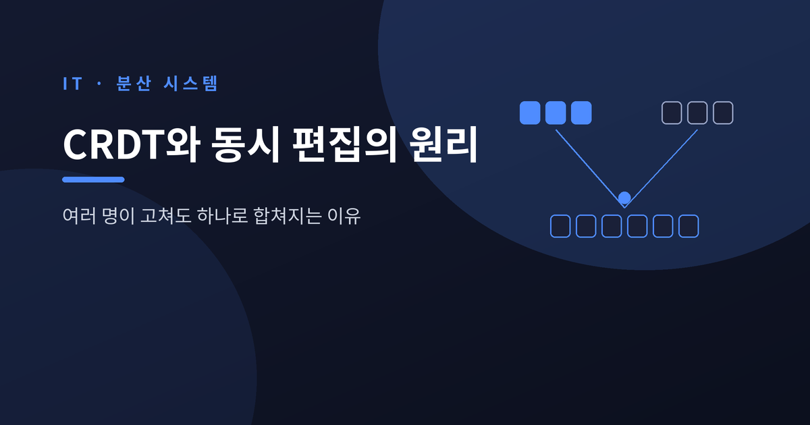
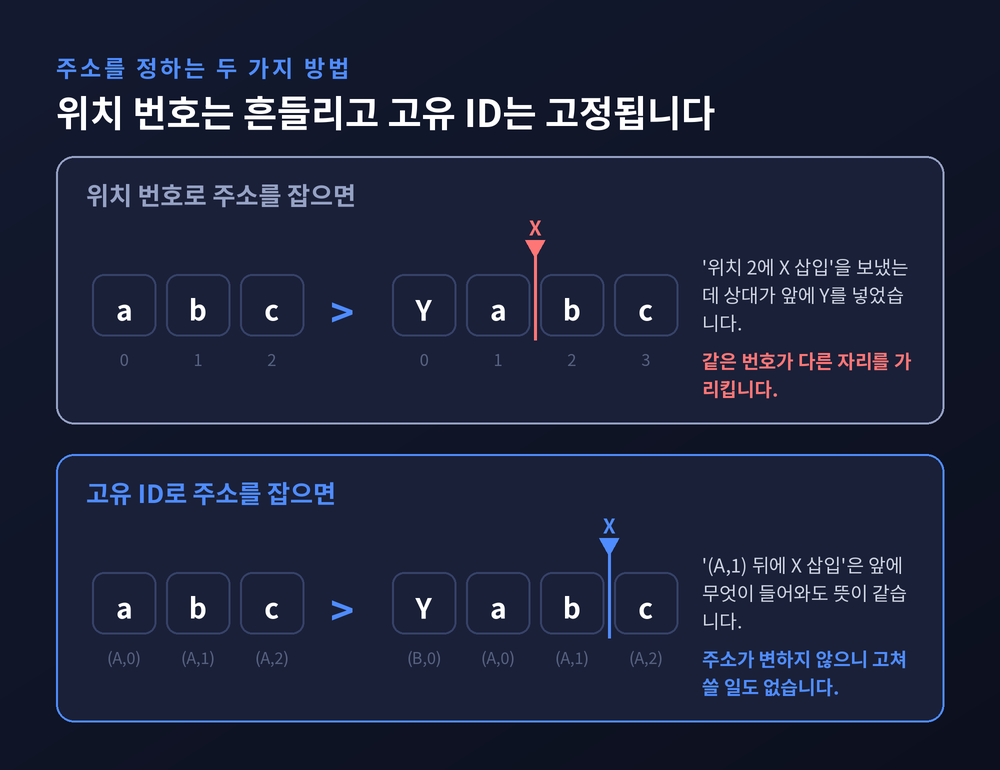
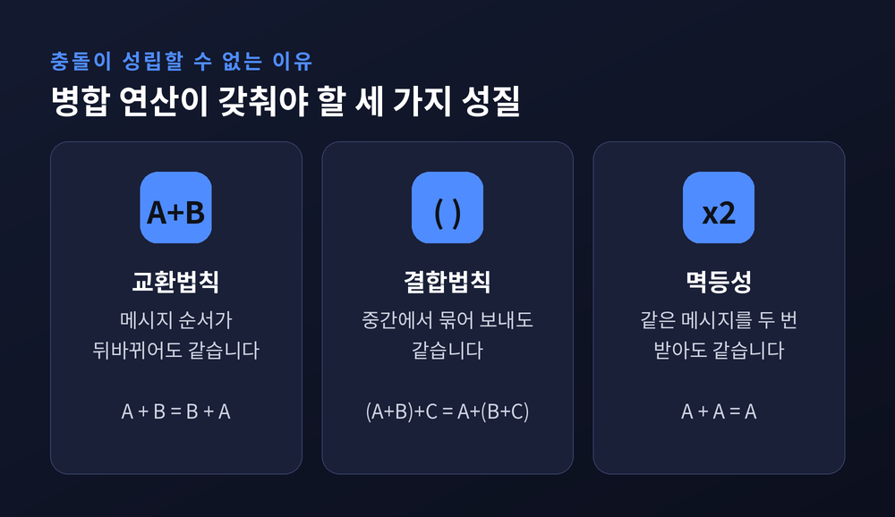
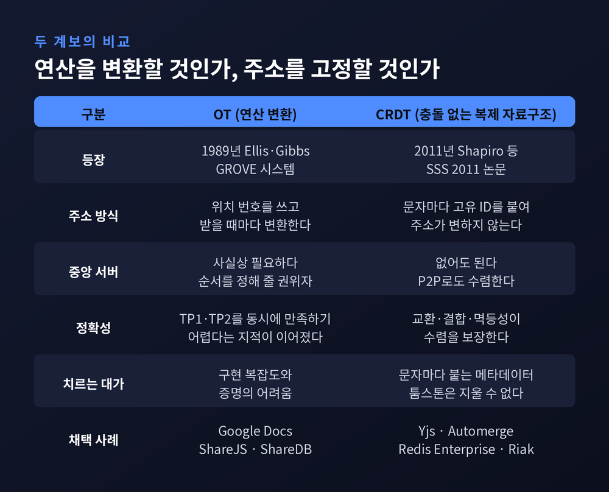
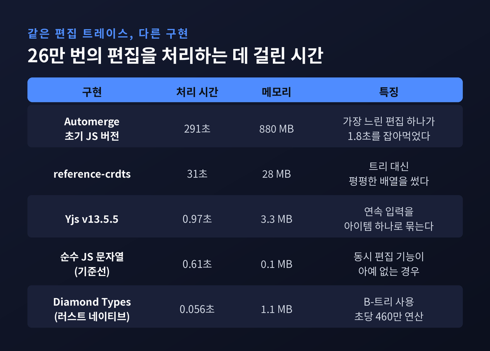
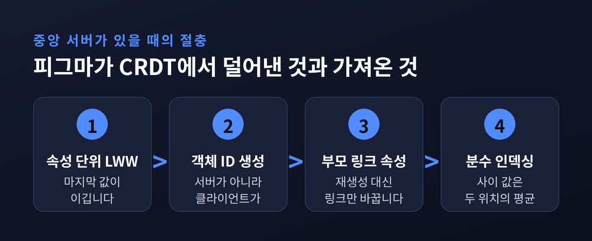
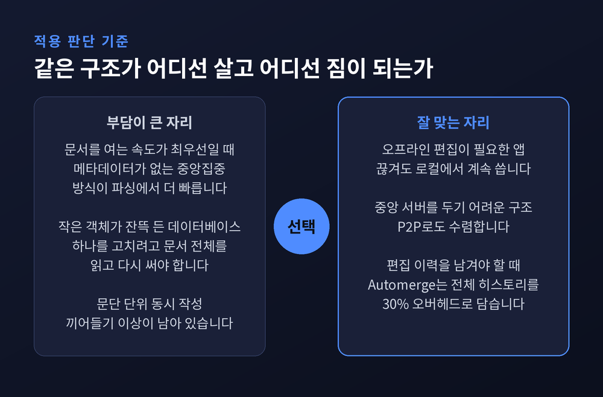

CRDT 원리 — 동시에 편집해도 문서가 충돌 없이 합쳐지는 이유
이번 글에서는 CRDT, 우리말로 충돌 없는 복제 자료구조를 정리해 보겠습니다. 여러 사람이 같은 문서를 동시에 고치는데도 "누가 이길지" 묻는 창이 뜨지 않는 이유를 다룹니다. 답은 네트워크가 아니라 자료구조 안에 들어 있습니다.

세 줄 요약
- CRDT는 충돌을 잘 해결하는 기술이 아닙니다. 순서가 바뀌든 중복 배달되든 같은 결과가 나오도록 충돌이 성립할 수 없게 자료구조를 설계한 것입니다.
- 비결은 "3번째 글자"라는 위치 번호를 버리고, 문자마다 변하지 않는 고유 ID를 붙이는 것입니다. 주소가 변하지 않으니 변환할 것도 없습니다.
- 값비싸다는 통념은 구현 문제였습니다. 26만 번의 편집을 Automerge 초기 버전은 291초에 880MB로 처리했지만, Yjs는 0.97초에 3.3MB로 끝냅니다.
위치 번호를 버리고, 글자마다 이름표를 답니다
문제의 출발점은 단순합니다.
두 사람이 같은 문장을 동시에 고칠 때, "위치 3"이라는 말이 두 사람에게 다른 뜻이 됩니다.
상대가 앞쪽에 한 글자를 끼워 넣는 순간 내 위치 3은 위치 4가 되어 버리니까요.
CRDT는 이 문제를 정면으로 풀지 않습니다.
아예 위치 번호를 쓰지 않습니다.
대신 문자마다 (사용자 ID, 논리 시계) 짝으로 된 고유 ID를 붙입니다.
이 조합을 램포트 타임스탬프(Lamport Timestamp)라고 부릅니다.
사용자 식별자는 겹치지 않고, 논리 시계는 글자를 넣을 때마다 하나씩 올라갑니다.
그래서 삽입은 "위치 3에 넣어라"가 아니라 이렇게 표현됩니다.
ID가 (seph, 0)인 글자 뒤에 넣어라.
이 주소는 다른 사람이 무슨 짓을 하든 변하지 않습니다.
문서가 아무리 길어져도, 앞쪽이 통째로 지워져도 그대로입니다.
변하지 않는 주소를 쓰면 주소를 고쳐 쓸 일이 없어집니다.

순서가 뒤바뀌어도, 두 번 와도 같은 답이 나와야 합니다
CRDT라는 이름과 이론적 뼈대는 2011년 논문에서 나왔습니다.
마크 샤피로(Marc Shapiro), 누누 프레기사, 카를로스 바케로, 마렉 자비르스키 네 사람의 SSS 2011 논문 "Conflict-free Replicated Data Types"입니다.
여기서 정의한 개념이 강한 최종 일관성(Strong Eventual Consistency) 입니다.
보통의 최종 일관성은 "언젠가는 맞춰진다"고만 약속합니다.
맞추는 방법, 즉 충돌 해결은 시스템이 알아서 하라고 남겨 둡니다.
강한 최종 일관성은 한 칸 더 갑니다.
같은 업데이트 묶음을 받은 복제본은 곧바로 같은 상태입니다.
합의 절차도, 롤백도, 충돌 해결 화면도 필요 없습니다.
무엇이 이걸 보장할까요.
상태 기반 CRDT는 자기 상태 공간이 결합 반격자(join-semilattice) 를 이루도록 설계됩니다.
어려운 말 같지만, 실제로 요구하는 것은 병합 연산이 가진 세 가지 성질뿐입니다.
| 성질 | 네트워크가 저지르는 사고 | 결과 |
|---|---|---|
| 교환법칙 | 메시지 순서가 뒤바뀐다 | 결과 같음 |
| 결합법칙 | 중간에서 묶어 한꺼번에 보낸다 | 결과 같음 |
| 멱등성 | 같은 메시지를 두 번 배달한다 | 결과 같음 |
분산 환경에서 벌어지는 사고는 사실상 이 세 가지입니다.
순서가 섞이고, 묶여서 오고, 중복으로 옵니다.
세 성질을 갖춘 병합 연산은 이 세 사고에 전부 면역입니다.
가장 간단한 예가 증가 전용 카운터(G-Counter)입니다.
노드마다 자기 칸을 하나씩 가진 벡터를 두고, 각자 자기 칸만 올립니다.
병합은 각 칸의 최댓값을 취하는 것이 전부입니다.
최댓값 연산은 순서를 바꿔도, 묶어도, 두 번 해도 답이 같습니다.

예전에는 연산을 변환했습니다
동시 편집 기술의 원조는 CRDT가 아닙니다.
1989년 C. Ellis와 S. Gibbs가 GROVE라는 그룹 편집 시스템에서 제안한 OT(Operational Transformation, 연산 변환) 입니다.
발상은 이렇습니다.
문서를 복제하는 대신 연산을 복제합니다.
들어온 연산을 이미 적용된 연산들에 맞춰 변환한 뒤 적용합니다.
상대가 위치 1에 한 글자를 넣었다면, 내 "위치 3에 삽입"을 "위치 4에 삽입"으로 고쳐서 적용하는 식입니다.
2009년 구글 웨이브와 구글 독스가 이 방식을 협업 기능의 핵심으로 채택했습니다.
ShareJS와 ShareDB 같은 오픈소스 계보도 여기서 나왔습니다.
문제는 정확성이었습니다.
발표 몇 년 뒤부터 오류 사례가 보고되기 시작했고, 원래의 dOPT 알고리즘이 실패하는 경우는 여러 연구 그룹이 각각 재발견해 dOPT 퍼즐이라는 이름까지 붙었습니다.
수렴을 보장하려면 변환 함수가 TP1과 TP2라는 두 성질을 만족해야 하는데, 한 분석은 문헌에 제시된 변환 함수들이 모두 부정확했다고 지적합니다.
나아가 삽입·삭제라는 기본 시그니처만으로는 두 성질을 동시에 만족시키는 것 자체가 불가능하다는 주장도 있습니다.
이전 해법을 모두 반증했다며 새 증명을 내놓은 연구가 나중에 다시 결함이 발견되는 일도 반복됐습니다.
피그마(Figma)는 멀티플레이어 기능을 만들 때 OT를 쓰지 않기로 했습니다.
공동창업자 에반 월리스가 블로그에서 밝힌 이유는 담백합니다.
OT는 긴 텍스트를 낮은 오버헤드로 다루기엔 훌륭하지만, 가능한 상태의 조합 폭발을 일으켜 올바르게 구현하기가 매우 어렵다는 것입니다.
그가 인용한 문장이 상황을 잘 요약합니다.
"형식적 증명이 매우 복잡하고 오류가 나기 쉽다. 삽입과 삭제라는 문자 단위 원시 연산 두 개만 다루는 OT 알고리즘조차 그렇다."

글자마다 ID를 붙이면 문서가 터지지 않습니까
당연한 의심입니다.
문자 하나하나에 ID를 붙이고, 삭제해도 지우지 못한다면 문서는 커지기만 할 테니까요.
실제로 지우지 못합니다.
삭제한 문자를 배열에서 진짜로 빼면, 그 문자를 부모로 참조하던 다른 삽입이 갈 곳을 잃습니다.
그래서 삭제 표시만 남기고 자리를 지킵니다. 이것을 툼스톤(tombstone, 묘비) 이라 부릅니다.
이 의심 때문에 실제로 발을 뺀 프로젝트들이 있습니다.
코드미러 6(CodeMirror 6)의 개발자는 "그런 표현의 비용이 상당하다"며 채택하지 않았습니다.
자이 에디터(Xi Editor)는 CRDT를 데이터 모델로 썼다가 "그 상당한 무게값을 못 하고 있다"며 동기식 모델로 되돌렸습니다.
판을 바꾼 것은 알고리즘이 아니라 표현 방식이었습니다.
사람은 보통 왼쪽에서 오른쪽으로 이어서 칩니다.
그래서 Yjs는 "hello"를 다섯 개 아이템이 아니라 하나의 아이템으로 저장합니다.
ID는 시작점만 두고, 개별 문자는 오프셋으로 식별합니다.
긴 글을 붙여넣어도 아이템 하나입니다.
결과적으로 메타데이터의 양이 입력한 글자 수가 아니라 사용자 조작 횟수에 비례하게 됩니다.
삭제는 표시만 남기고 내용을 버리므로, Yjs에서는 지우면 오히려 메모리가 줄어듭니다.
숫자로 확인해 보겠습니다.
마틴 클레프만이 17쪽짜리 학회 논문을 실제로 집필하며 기록한 키 입력 전체가 공개된 벤치마크로 쓰입니다.
단일 문자 삽입 182,315회, 삭제 77,463회, 최종 문서 104,852자입니다.
이 트레이스를 적용했을 때 Yjs가 만든 Item 객체는 10,971개뿐이었습니다.
26만 번의 조작이 1만 1천 개로 압축된 셈입니다.
메모리 19.7MB, 인코딩된 문서 159,927바이트, 파싱 시간 20밀리초.
원문 대비 저장 오버헤드가 약 53%입니다.

같은 트레이스를 다른 구현으로 돌린 결과는 차이가 더 극적입니다.
Automerge 초기 버전은 291초에 880MB를 썼고, 가장 느린 단일 편집 하나가 1.8초를 잡아먹었습니다.
Yjs는 0.97초에 3.3MB입니다.
러스트로 짠 Diamond Types는 네이티브 기준 0.056초 — 5,000배 넘는 차이입니다.
Automerge도 러스트로 전면 재작성했습니다.
2.0에서 26만 연산을 1,816밀리초에 처리했고, 컬럼 지향 바이너리 인코딩으로 전체 편집 히스토리를 담고도 오버헤드 30%를 달성했습니다. 문자당 1바이트가 안 됩니다.
참고로 0.14 시절의 순진한 JSON 인코딩은 문자당 1,300바이트를 넘기기도 했습니다.
2025년 7월의 3.0은 런타임에서도 압축 표현을 그대로 쓰도록 재설계해 메모리를 10배 이상 줄였습니다.
『모비딕』 전문을 붙여넣었을 때 2.0은 700MB, 3.0은 1.3MB를 씁니다.
피그마는 진짜 CRDT를 쓰지 않습니다
흥미로운 절충 사례라 따로 적습니다.
피그마는 CRDT에서 영감을 얻되 그것을 그대로 쓰지는 않는다고 스스로 밝힙니다.
이유는 명확합니다.
CRDT는 중앙 권위자가 없는 환경을 위한 도구이고, 거기엔 피할 수 없는 성능·메모리 비용이 따릅니다.
피그마는 서버가 권위자이므로 그 비용을 걷어냈습니다.
문서는 HTML DOM과 닮은 객체 트리입니다.Map<객체ID, Map<속성, 값>> 형태의 2단 맵으로 보면 됩니다.
서버는 각 (객체, 속성)에 대해 마지막으로 받은 값을 기억합니다.
CRDT 문헌의 LWW 레지스터와 비슷하지만 타임스탬프가 필요 없습니다. 서버가 순서를 정의하니까요.
대가도 분명합니다.
충돌의 최소 단위가 속성 값 전체입니다.
텍스트가 B일 때 한 사람이 AB로, 다른 사람이 BC로 바꾸면 결과는 AB 또는 BC입니다.ABC는 절대 나오지 않습니다.
피그마는 디자인 툴이지 텍스트 에디터가 아니므로 이 경우를 최적화 대상으로 삼지 않았다고 말합니다.
가장 까다로웠던 것은 트리였습니다.
객체의 부모를 바꾸는 연산이 문제입니다.
삭제 후 재생성 방식은 객체 정체성이 바뀌어 동시 편집이 유실되므로 쓸 수 없었고, 결국 부모 링크를 자식의 속성으로 저장하기로 했습니다.
그러자 새 문제가 생깁니다. A를 B의 자식으로, 동시에 B를 A의 자식으로 만들면 사이클이 생깁니다.
서버는 사이클을 만드는 갱신을 거부하지만, 클라이언트는 서버가 거부했다는 사실을 아직 모르는 상태에 잠시 놓입니다.
피그마의 해법은 그 객체들을 잠깐 트리에서 떼어 두었다가 되돌리는 것입니다. 좋은 해법은 아니라고 본인들도 인정합니다.
자식들의 순서는 분수 인덱싱(fractional indexing) 으로 정합니다.
각 자식의 위치를 0과 1 사이의 분수로 두고, 두 객체 사이에 끼워 넣을 때는 두 위치의 평균을 씁니다.

아직 풀리지 않은 문제도 있습니다
완벽한 기술이라고 말하려는 것은 아닙니다.
가장 알려진 약점은 상호 끼어들기(interleaving) 입니다.
두 사람이 같은 자리에 각각 한 문단씩 동시에 쓰면, 두 문단이 문자 단위로 뒤섞여 읽을 수 없는 글자 뭉치가 되는 현상입니다.
각 문단 내부의 순서는 멀쩡히 정의돼 있는데도 그렇습니다.
2023년 매튜 와이드너와 마틴 클레프만의 조사 결과는 냉정합니다.
조사한 모든 CRDT와 OT 알고리즘이 어떤 형태로든 끼어들기 이상을 보였습니다.
Logoot과 LSEQ에서 특히 두드러지고, RGA도 삽입이 연속적이지 않으면 약한 형태가 나타납니다.
기존의 비끼어들기 정의들은 만족 자체가 불가능했습니다.
두 사람은 최대 비끼어들기라는 새 기준을 정의하고 Fugue와 FugueMax를 제안해, FugueMax가 이 기준을 만족함을 증명했습니다.
메타데이터 자체도 없앨 수 없습니다.
모든 CRDT는 문자마다 고유 ID와 부가 정보를 붙이고, 그 정보는 충돌 해결에 필요하기 때문에 버릴 수 없습니다.
줄일 수 있는 것은 양이 아니라 표현 방식입니다.
"CRDT가 OT보다 빠르다"는 통념도 조심스럽습니다.
Yjs를 만든 케빈 얀스 본인이 이렇게 지적합니다.
학계는 초당 연산 수로 성능을 재지만, 공유 편집에서 정말 중요한 지표는 문서를 여는 데 걸리는 파싱 시간입니다.
그리고 파싱 시간만 놓고 보면 메타데이터를 거의 안 붙이는 중앙집중 방식이 오히려 유리합니다.
만든 사람이 직접 인정하는 한계입니다.

끝으로 한 마디만 더 드리겠습니다.
동시 편집을 처음 접했을 때는 서버가 어떤 영리한 중재를 하는 줄 알았습니다.
지금은 정반대라는 것을 압니다.
중재하지 않아도 되도록 자료구조를 미리 깎아 둔 것에 가깝습니다.
"충돌을 잘 해결하는 대신, 충돌이 성립할 수 없게 만든다."
CRDT를 한 문장으로 줄이면 이 말이 남습니다.
순서를 지킬 수 없는 세계에서, 순서에 의존하지 않는 연산을 고르는 일입니다.
그 선택 하나가 합의 프로토콜 전체를 지워 버립니다.
여러 명이 붙어 고친 문서가 조용히 하나로 합쳐지는 장면을 다시 보게 되신다면, 그 조용함이 우연이 아니라는 점을 떠올려 보시면 좋겠습니다.